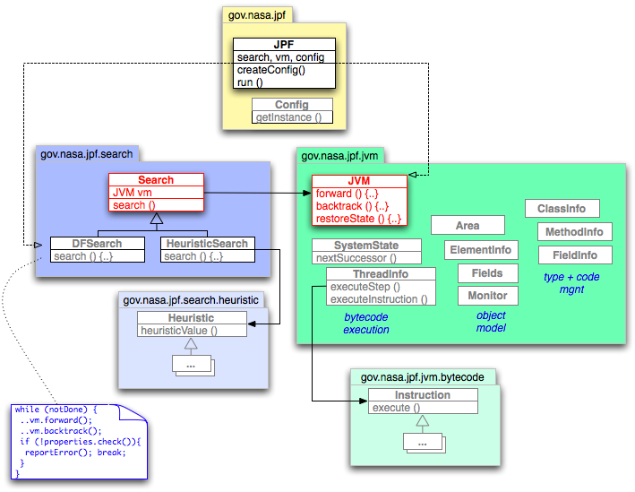

JPF was designed around two major abstractions: (1) the JVM, and (2) the Search object.
(1) The JVM is the Java specific state generator. By executing Java bytecode instructions, the JVM generates state representations that can be
The main JVM parameterizations are classes that implement the state management (matching, storing, backtracking). Most of the execution scheme is delegated to the SystemState, which in turn uses a SchedulerFactory (a factory object for ThreadChoiceGenerators) to generate scheduling sequences of interest.
There are three major JVM methods in the context of the VM-Search collaboration

Figure 1: JPF toplevel structure
(2) The Search object is responsible for selecting the state from which the JVM should proceed, either by directing the JVM to generate the next state (forward), or by telling it to backtrack to a previously generated one. Search objects can be thought of as drivers for JVM objects.
Search objects also configure and evaluate property objects (e.g. NotDeadlockedProperty, NoAssertionsViolatedProperty). The main Search implementations include a simple depth-first search (DFSearch), and a priority-queue based search that can be parameterized to do various search types based on selecting the most interesting state out of the collection of all successors of a given state (HeuristicSearch). A Search implementation mainly provides a single search method, which includes the main loop that iterates through the relevant state space until it has been completely explored, or the search found a property violation.
The JPF core is partitioned into three main packages and three support packages:
gov.nasa.jpf - the main responsibility of this package is configuration and instantiation of the core JPF objects, namely the Search and JVM. The configuration itself is delegated to the Config class, which contains various methods to create objects or read values from a hierarchy of property files and command line options (see Configuring JPF Runtime Options). Beyond the configuration, the JPF object has little own functionality. It is mainly a convenience construct to start JPF from inside any Java application without having to bother with its complex configuration.
gov.nasa.jpf.jvm - constitutes the main body of code, including the various constructs that implement the Java state generator. Conceptually, the major class is JVM, but again this class delegates most of the work to a set of second level classes that together implement the major functionality of JPF. These classes can be roughly divided into three categories:
gov.nasa.jpf.search - is relatively small and mainly contains the
Search class, which is an abstract base for search policies. The
major method that encapsulates the policy is Search.search(), which
is the JVM driver (that calls forward(), backtrack() and
restore()). This package also contains the plain-vanilla depth-first
search policy DFSearch.
More interesting policies can be found in the sub-package
gov.nasa.jpf.search.heuristic, which uses a HeuristicSearch
class in conjunction with confgurable Heuristic objects to prioritize
a queue of potential successor states